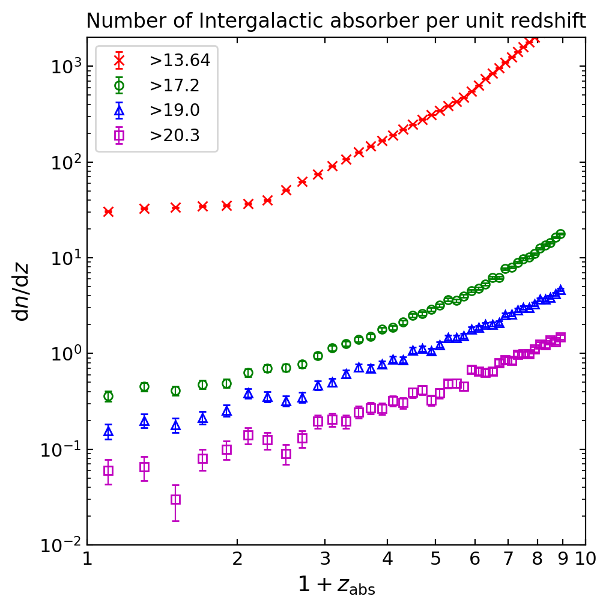
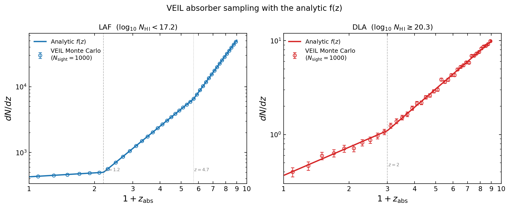
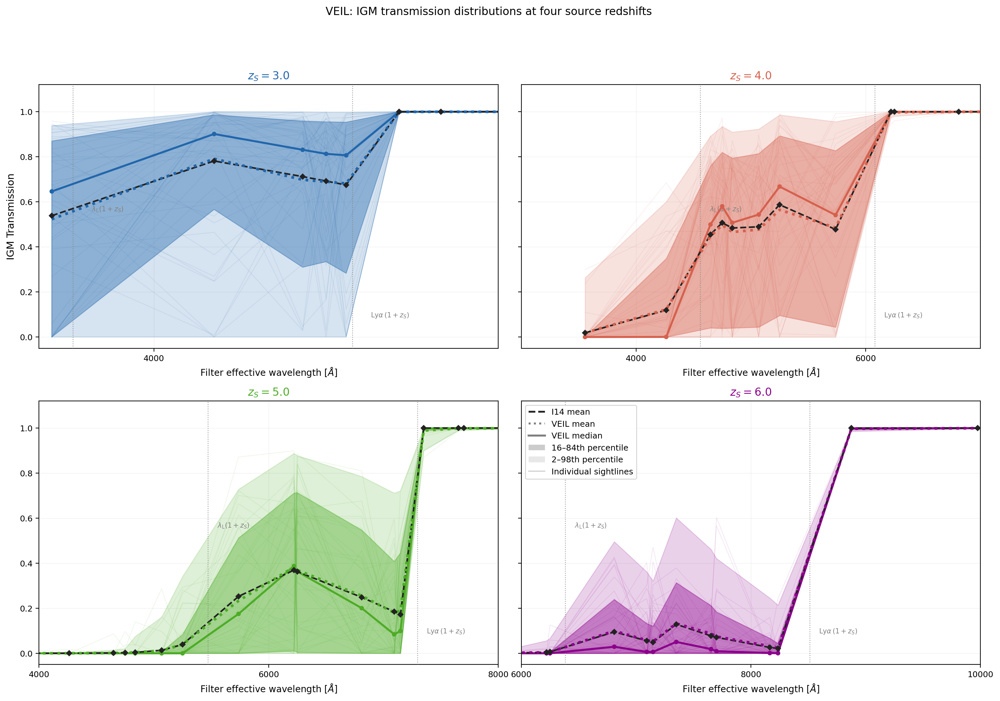

Variable Intergalactic Line-of-sight Absorption. Instead of correcting every galaxy with the same average absorption, VILA simulates 1,000 possible arrangements of hydrogen clouds per galaxy and lets each galaxy's own photometry vote on which arrangements are believable.
Classic IGM prescriptions — Madau (1995), Meiksin (2006), Inoue et al. (2014) — all answer the same question: on average, how much light does the intergalactic medium absorb at each wavelength for a source at redshift z? They deliver one mean transmission curve per redshift, and virtually every SED-fitting code applies it identically to every galaxy.
But the absorbers are discrete clouds, scattered randomly. Two galaxies at the same redshift on opposite sides of the COSMOS field look through completely different cloud populations. And the distribution of outcomes is violently skewed: most sightlines are fairly clean, while an unlucky few hit a thick Lyman-limit system and go nearly opaque. The mean of such a lopsided distribution describes almost no individual sightline. Correcting every galaxy with the mean therefore guarantees you're wrong about most of them — systematically too dark for the lucky ones, far too bright for the unlucky ones.
Stage 1 runs once and produces a library. Stage 3 is where VILA earns its name: each galaxy gets its own posterior over the absorption, conditioned on its own fluxes — no two galaxies share a correction.
Before trusting 419 million sightline evaluations, the generator has to be validated against the published absorber statistics it claims to sample. Clouds are drawn as a Poisson process: the expected number of clouds up to the source redshift comes from integrating the Inoue et al. (2014) rate functions; each cloud is then placed at a redshift via inverse-transform sampling and assigned a column density from a Schechter-like distribution (sampled numerically in log space, since the function can't be inverted analytically). Two figures certify the machinery.

The number of intergalactic absorbers per unit redshift, dn/dz, generated by VILA along 1,000 sightlines out to z = 8, as a function of the absorbers' redshift (plotted as 1+z). Four column-density thresholds are shown with Poisson error bars: crosses for the abundant thin Lyman-α forest clouds (NHI > 10¹³·⁶⁴ cm⁻²), open circles for Lyman-limit systems, triangles for sub-DLAs, and squares for the rare, opaque DLAs.
What to look for: the forest counts (top curve) steepen sharply above z ≈ 2 and again above z ≈ 4 — the young universe was denser — while the DLA counts (bottom) barely evolve. The vertical spread between curves spans about three orders of magnitude: thin clouds outnumber thick ones ~1000:1, yet a single thick one can blacken a sightline. The verdict: across all four regimes and the full redshift range, this reproduces Figure 2 of Inoue & Iwata (2008) — the sampler is statistically faithful to the observed IGM.

Binned absorber counts from 1,000 VILA sightlines (open circles with Poisson error bars) overlaid on the analytic Inoue et al. (2014) rate functions (solid lines), separately for the Lyman-α-forest component (left) and the damped-Lyman-α component (right). Dashed vertical lines mark the built-in redshift breaks of the rate functions — z = 1.2 and z = 4.7 for the forest, z = 2 for DLAs — where the power-law slope of cosmic cloud evolution changes.
How to read it: note the y-axes — the forest panel counts hundreds of clouds per unit redshift while the DLA panel counts around one, illustrating that LAF clouds are much more common. Every simulated point sits on its analytic curve within the error bars, through both slope breaks. Implication: the Poisson placement, the inverse-CDF redshift assignment, and the column-density draws are all working; any downstream disagreement with data can now be attributed to physics or modelling choices, not to a broken random-number pipeline.
For each cloud on each sightline, the absorption is computed from real atomic physics: photoionisation (the Lyman continuum) plus the first nine Lyman-series lines, each with a Voigt profile evaluated through the fast Tepper-García/Harris expansion, accurate to 10⁻⁴. Exponentiate the summed optical depth and you get that sightline's transmission at each filter's wavelength. Repeat 1,000 times per redshift grid point and the result is not a curve but a cloud of curves — the full probability distribution of the absorption. Between grid points, a Gaussian copula interpolates the whole n-dimensional joint distribution at once, preserving the correlations between filters that naive per-filter interpolation would destroy.

IGM transmission versus observed wavelength at four source redshifts (z = 3, 4, 5, 6), evaluated at the effective wavelengths of the IGM-affected COSMOS filters. In each panel: the solid coloured line is the VILA median over 1,000 sightlines; the dotted coloured line is the VILA mean; the dark and light shaded bands enclose the 16–84th and 2–98th percentile ranges; the dashed black curve is the Inoue et al. (2014) analytic mean; vertical dotted lines mark the observed-frame Lyman limit and Lyman-α wavelengths. Redward of Lyman-α, transmission is exactly 1 by construction — the fog cannot touch those photons.
Three things to notice. First, the VILA mean sits precisely on the analytic I14 mean — the model contains the standard model as its average, as it must. Second, the 2–98% band spans nearly the entire [0, 1] range at many wavelengths: the transmission distribution is effectively bimodal, split between clean sightlines and ones that hit a Lyman-limit system and went dark. Third, the median sits above the mean, especially at lower redshift — the classic signature of a left-skewed distribution, where a minority of opaque sightlines drags the average down below the typical case. Applying the mean curve to every galaxy misdescribes almost all of them. The spread is real physics, and only a per-galaxy, likelihood-weighted treatment can use it.
The test: fit each z ≥ 2 galaxy's photometry with the 8-component basis, predict its fluxes in the IGM-affected blue bands, and count how badly the predictions miss — under three treatments of the fog. The residual is (data − model)/uncertainty, so |r| > 3 means the prediction is off by more than three error bars: an outlier.
| IGM treatment | Median residual | Scatter (NMAD) | Outlier fraction |r| > 3 |
|---|---|---|---|
| No correction (T = 1) | −0.51 (too bright) | 1.25 | 11.62% |
| Inoue+14 mean curve | +1.53 (too faint) | 1.24 | 17.00% |
| VILA (per-galaxy) | +0.15 | 0.68 | 2.26% |
| Filter | No IGM | I14 mean | VILA |
|---|---|---|---|
| HSC g | 14.29% | 29.03% | 0.19% |
| HSC r | 24.50% | 42.59% | 0.03% |
| HSC i | 98.73% | 40.52% | 0.32% |
| All 18 filters | 11.62% | 17.00% | 2.26% |
Applying the standard mean IGM curve is often worse than applying no correction at all. Why? The least-squares fit already quietly absorbs part of the IGM dimming into its coefficients while matching the blue bands. Stacking the full mean absorption on top then over-corrects, leaving the model too faint. VILA sidesteps this by fitting only the residual absorption the coefficients couldn't explain — which is precisely what the data can constrain. The result: a median residual of 0.15 (nearly unbiased), scatter below the noise level, and an 87% reduction in outliers relative to the standard approach.